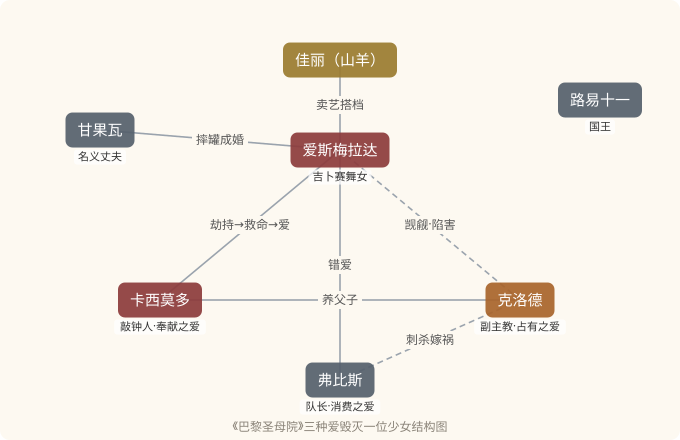

巴黎圣母院
| 作者 | 雨果 |
|---|---|
| 成书/出版 | 1831年出版（Britannica 作家条口径） Victor Hugo — Encyclopaedia Britannica（百科全书） |
| 国别/地区 | 法国 |
| 时代 | 近代 · 19世纪 |
| 体裁 | 长篇小说（历史小说/浪漫主义） |
| 语言 | 法语 |

《巴黎圣母院》三种爱毁灭一位少女结构图（人物关系图）
二、创作背景
创作于1828—1831年间（Britannica 相关条目记其1831年出版）：雨果以15世纪路易十一治下的巴黎为舞台，把哥特建筑与中世纪巴黎写成'石头的史书'（其意，原文待核）——小说同时是拯救巴黎圣母院的呼吁（'这座教堂需要保护'的作者立场，通说待核）。
历史语境：1830年七月革命次年——以1482年的'人民—教会—王权'冲突影射当下（通说解读）。
《克伦威尔序》的实践：本剧（小说）以爱斯梅拉达（美）与卡西莫多（丑）、副主教克洛德（伪善）的对照原则展开——浪漫主义美学的标本（Britannica：对照原则为其浪漫主义 doctrine 的核心）。
三、内容脉络
吉卜赛舞女爱斯梅拉达在格雷沃广场卖艺，遭副主教克洛德·弗罗洛觊觎；丑聋人卡西莫多（圣母院敲钟人，克洛德养子）奉命劫持她，被弓箭队长弗比斯所救——爱斯梅拉达爱上轻浮的弗比斯。
克洛德刺伤弗比斯并嫁祸爱斯梅拉达：她被屈打成招判绞刑；行刑之际卡西莫多劫法场，把她救入圣母院'避难'（中古教会避难权，通说待核）。
乞丐王国攻打圣母院救人，卡西莫多误守教堂抗拒；国王军队镇压，爱斯梅拉达被克洛德带出后仍拒其淫威，被交给追兵绞死；卡西莫多把克洛德从钟楼推下，随后失踪——两年后人们在蒙孚贡墓地发现一对相拥的骸骨，一碰即化为尘土（结尾意象，原文待核）。
四、主要人物表
| 人物 | 身份 | 说明 |
|---|---|---|
| 爱斯梅拉达 | 吉卜赛舞女 | 美的化身：舞、羊、小鼓——被三个男人（欲望、占有、爱）毁灭的 innocent |
| 卡西莫多 | 圣母院敲钟人 | 独眼驼背聋子——'丑到极致者'的爱最纯粹； Brittanica 记其被养父抚养 |
| 克洛德·弗罗洛 | 副主教 | 禁欲教士的欲望深渊——伪善与毁灭的化身 |
| 弗比斯 | 御前弓箭队长 | 英俊轻浮——美之诱惑的空洞 |
| 甘果瓦 | 落魄文人 | 爱斯梅拉达名义上的丈夫（摔罐成婚的救命婚姻，通说待核）——雨果式的自嘲 |
| 路易十一 | 法国国王 | 狡诈冷酷的'蜘蛛'——王权的描写 |
五、主题与艺术特点
- 美与丑的辩证：卡西莫多的丑与爱的美、克洛德的道貌与心里的兽——'美丑对照'原则的实践（Britannica 记其浪漫主义 doctrine）。
- 命运的悲剧结构：三位男性（克洛德/弗比斯/卡西莫多）对爱斯梅拉达的三种爱（占有/消费/奉献）——全部通向毁灭。
- 建筑与历史的书写：圣母院作为'石头史书'——小说对哥特建筑的深情议论占大量篇幅（通说）。
- 人民与王权：乞丐王国的'王国'与路易十一的王国对照——雨果的人民立场（通说）。
六、影响与评论
- Britannica（Hugo 条目）：Notre-Dame de Paris (1831) 与 Les Misérables (1862) 并列为其两大小说（novels 列举）。
Victor Hugo — Encyclopaedia Britannica（百科全书） - 保护建筑的实效：小说引发巴黎对圣母院与大教堂的修复运动（维欧莱-勒杜克修复工程1850s—1860s，通说待核）。
Victor Hugo — Encyclopaedia Britannica（百科全书） - 跨媒介：1923/1939/1956/1996年电影与迪士尼动画（通说待核）、音乐剧《Notre-Dame de Paris》（1998，通说待核）——改编最频繁的雨果作品。
Victor Hugo — Encyclopaedia Britannica（百科全书） - 文学史定位：雨果'abroad better known for his novels'（Britannica）——本作与《悲惨世界》构成其国际声望的基础。
Victor Hugo — Encyclopaedia Britannica（百科全书）
七、阅读建议
难点
- 建筑学议论章节（'巴黎鸟瞰''圣母院建筑'两整章）可跳读，但建议感受其'石头史书'观。
- 15世纪历史背景（路易十一、勃艮第与法兰西、吉卜赛人处境）需要注释。
- 中世纪'避难权'制度是情节关键。
- 管震湖译《巴黎圣母院》（人民文学出版社）：通行本。
- 李玉民译本（人民文学/译林等）：另一选择。
- 英译：The Hunchback of Notre-Dame（1833年首译，通说待核）；Penguin Classics 现代译本。
先读第1—5卷（爱斯梅拉达登场、劫持、审判）→ 通读 → 精读'卡西莫多劫法场'与结尾'两具骸骨' → 对照《悲惨世界》看雨果十年间的风格变化。
八、待核实
- 出版年（1831年3月 Gosselin 书局说）与连载（'La Bibliothèque choisie'？）细节待核。
- 维欧莱-勒杜克修复与小说因果（旅游指南常用说法）的学术确认待核。
- '石头史书'比喻的原文出处（第5卷'这个将杀死那个'章？）待核。
- 管震湖/李玉民译本出版信息待核。